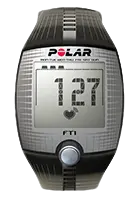
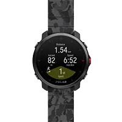
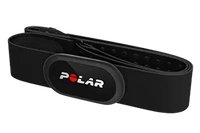
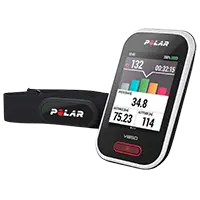
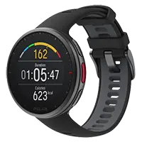
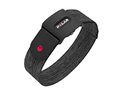

Ірина Іванченко2 півмарафонaНе знала, що собі купити – звернулася до хлопців з RunSmart – підібрали пульсометр, який підійшов саме під мої цілі та фінансові можливості. Через деякий час вирішила оновити гаджет – не роздумуючи звернулася туди ж. Нові цілі – новий гаджет! Дякую, RunSmart!
Наші переваги
-
Ділимося досвідом
Наші співробітники завжди готові поділитися своїм досвідом, оскільки самі бігають напівмарафони, перепливли Босфор, готуються до змагань з тріатлону!
-
Дбаємо про здоров'я
Ми працюємо для того, щоб Ваші заняття спортом йшли на користь Вашому здоров'ю та були на радість Вам та Вашим близьким! Ми працюємо для того, щоб Ваші заняття спортом йшли на користь Вашому здоров'ю та були на радість Вам та Вашим близьким!
-
Вчимо бігати
Допомагаємо з навчанням правильній техніці бігу! Дружимо з найбільшою школою бігу в Україні – Saucony Running Club.
Получите бесплатную консультацию по подбору пульсометра
Просто заполните форму заявки и мы перезвоним вам в течении 10 минут

Каталог пульсометрів

Пульсометр Polar FT1
Для перших кроків у тренуваннях, заснованих на серцевому ритмі Для перших кроків у тренуваннях, заснованих на серцевому ритмі Для перших кроків у тренуваннях, заснованих на серцевому ритмі Для перших кроків у тренуваннях, заснованих на серцевому ритмі Для перших кроків у тренуваннях, заснованих на серцевому ритмі заснованих на серцевому ритмі Для перших кроків у тренуваннях, заснованих на серцевому ритмі Для перших кроків у тренуваннях, заснованих на серцевому ритмі
- Для першого кроку у тренуваннях, заснованих на серцевому ритмі.
- Відображення серцевого ритму на великому дисплеї, що добре читається.
- Допомагає покращити ваш фітнес-рівень за допомогою встановлення цільових зон серцевого ритму.
- Відображення підсумків останнього тренування.

Пульсометр Polar Grit X Grey
Вимірювання оптичного імпульсу та потужності на зап'ясті.
- HILL SPLITTER: докладні дані про продуктивність при підйомах та спусках.
- Напрямок маршруту в режимі реального часу: завжди залишайтеся на правильному шляху.
- Маршрути КОМООТ: імпорт маршрутів та покрокова навігація
- FUELWISE Smart Energy Assistant: нагадування, щоб заповнити запас енергії під час довгих одиниць.

Датчик ЧСС Polar H10N
Современный ремешок для пульса используемый для фитнес-приложений
- Bluetooth® Smart.
- Оновлене програмне забезпечення.
- Інтерфейс 15 мовами.
- Акумулятор, що перезаряджається, на 10 годин тренувань.

Велокомпьютер Polar V650 N
Polar V650 — это велокомпьютер с функцией GPS, разработанный для тех, кто серьезно занимается велоспортом.
- Точність: POLAR H10 є найточнішим датчиком серцевого ритму.
- Передача даних через Bluetooth Smart LE: сумісна з сучасними велосипедами та комп'ютерами, що носяться.
- Передача даних ANT+: сумісна з численними тренувальними комп'ютерами Garmin та Suunto.
- Знімний датчик H10 для самостійної заміни батареї.

Пульсометр Polar Vantage V2 Black M/L
В этих водонепроницаемых GPS-часах для мультиспорта собраны все спортивные достижения Polar в одном пакете
- Визначення VO2Max (МПК) за допомогою бігового тесту фізичної форми.
- Велосипедний тест фізичної форми FTP (20,30 та 40 хвилин).
- У Polar Flow додано розділ, що поєднує всі дані відновлення.
- Новый оптический датчик пульса как на Polar Grit X, но с измененным алгоритмом работы.

Датчик сердечного ритма Polar Verity Sense HR
Современный ремешок для пульса используемый для фитнес-приложений
- Тривалий час автономної роботи: до 20 годин.
- Велика внутрішня пам'ять: 16 МБ (до 600 годин тренувальних даних).
- Кріпильний затискач для стандартних плавальних окулярів.
- Водонепроникність до 50 метрів.
Датчик ЧСС Polar H10N
Современный ремешок для пульса используемый для фитнес-приложений
- Bluetooth® Smart.
- Оновлене програмне забезпечення.
- Інтерфейс 15 мовами.
- Акумулятор, що перезаряджається, на 10 годин тренувань.
Датчик сердечного ритма Polar Verity Sense HR
Современный ремешок для пульса используемый для фитнес-приложений
- Тривалий час автономної роботи: до 20 годин.
- Велика внутрішня пам'ять: 16 МБ (до 600 годин тренувальних даних).
- Кріпильний затискач для стандартних плавальних окулярів.
- Водонепроникність до 50 метрів.
Велокомпьютер Polar V650 N
Polar V650 — это велокомпьютер с функцией GPS, разработанный для тех, кто серьезно занимается велоспортом.
- Точність: POLAR H10 є найточнішим датчиком серцевого ритму.
- Передача даних через Bluetooth Smart LE: сумісна з сучасними велосипедами та комп'ютерами, що носяться.
- Передача даних ANT+: сумісна з численними тренувальними комп'ютерами Garmin та Suunto.
- Знімний датчик H10 для самостійної заміни батареї.
Отзывы клиентов
Іван Сьомочкін1 півмарафонКрута штука-пульсометр. Зазвичай без них бігав. Виявляється, тільки гірше собі робив. Купив пульсометр, ще подарунок отримав тренування. Зі мною разом провели перше тренування, навчили користуватися новим гаджетом. Також пояснили основи анатомії, склали план тренувань на місяць вперед. З ними підготувався до свого першого півмарафону! Дякую!!!
Юлія Дашкіна2 півмарафонaДовго було почати бігати, т.к. раніше кілька разів починала, але ставало важко і я кидала. Від друзів почула про RunSmart і про біг з контролем пульсу і вирішила спробувати. Тепер бігаю і насолоджуюся бігом! Пробігла вже 2 півмарафони і кілька коротших забігів і не має наміру зупинятися! Спасибі!!!